Allen Disk
Allen Disk 是一個強大、免費、開源的雲端硬碟，有了Allen Disk，你將可以擁有自己的網路硬碟，甚至開放註冊帳號，給大家當作免空。 Allen Disk 配有檔案加密儲存、外連檔案、線上預覽、分享資料夾等等功能，讓你輕鬆管理你的檔案或是分享給大家一起使用。
功能特色
使用介面
Allen Disk採用Bootstrap設計，介面簡單方便，一目了然，操作簡便
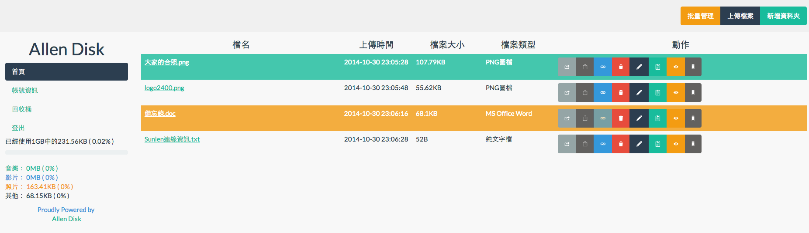檔案加密
Allen Disk採用高安全性的加密技術 AES-256 ，即使伺服器被攻破也不一定可以取得使用者檔案，可以下載此檔案以比較加密前後之差別
簡單上傳
Allen Disk 支援拖拉上傳和傳統的上傳方法，其中拖拉上傳配有上傳進度，只要把檔案從桌面拉到瀏覽器內，剩下的， Allen Disk 都會幫你做好，當你意識到你沒有按下上傳按鈕時， Allen Disk 已經上傳好了。另外，傳統上傳方法支援資料夾上傳，拖曳上傳尚不支援此功能。
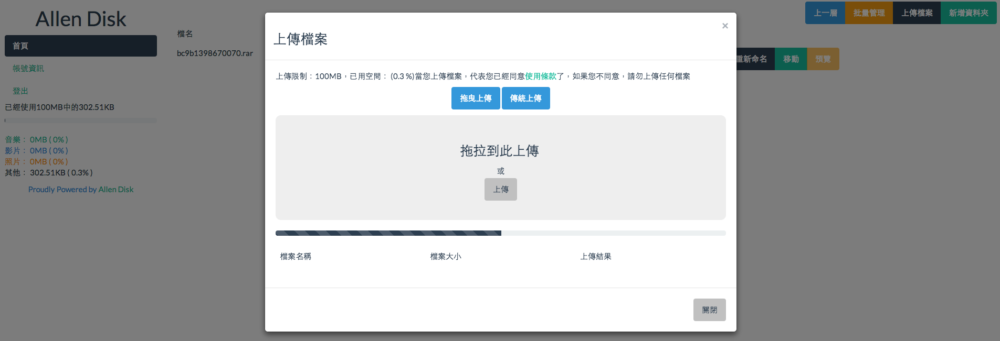快速分享
Allen Disk 讓您可以和朋友們一起分享檔案，您可以分享單一檔案或是整個資料夾，也可以在 Allen Disk 上外連檔案，只要按幾下滑鼠，整個世界，都是你的分享圈。
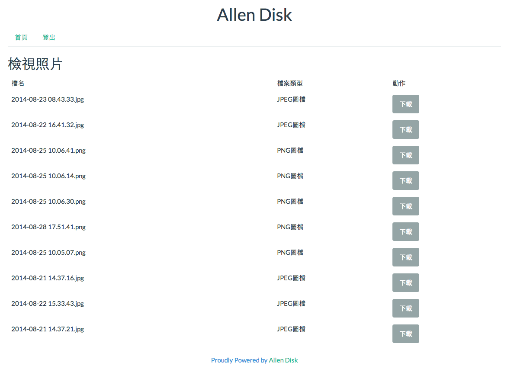線上預覽
Allen Disk 內建線上預覽功能，不要懷疑，你只要上傳檔案上去，就可以在線上觀看了，不論是音樂、影片、圖片，甚至是文字檔、網頁檔案，都可以輕輕鬆鬆的在 Allen Disk 上觀看。
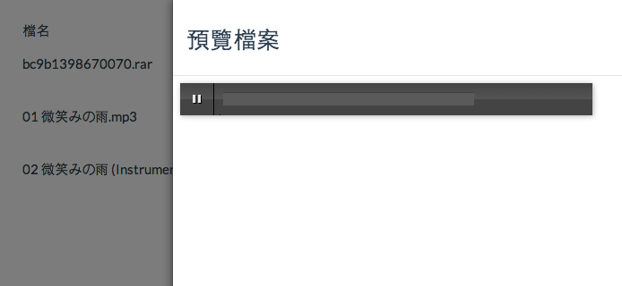版本更新
1.3
1.修正XSS漏洞
2.新增安裝 / 升級導引
3.全新UI
4.拖曳上傳 + 上傳進度
5.資料夾功能
6.更強大的檔案分享
7.線上預覽檔案
8.批次管理檔案 / 資料夾
1.2
1.修正許多錯誤
2.新增管理員介面
3.全新UI
4.新增多檔上傳
1.1
1.修正檔案下載錯誤
2.可以選擇是否顯示「為何選用我們」(why.php)及「使用條款」(tos.php)
3.採用AJAX重新命名及刪除檔案
4.從1.1起授權改用MIT
1.0
Allen Disk首版，支援檔案加密、外連等等功能
授權
Allen Disk採用MIT釋出，請務必遵守MIT之原則
以下維基百科對MIT授權條款的中文翻譯
被授權人有權利使用、復製、修改、合併、出版發行、散布、再授權及販售軟體及軟體的副本。
被授權人可根據程式的需要修改授權條款為適當的內容。
在軟體和軟體的所有副本中都必須包含版權聲明和許可聲明。
開發人員
Allen Chou
不用說，我就是Allen Chou，是位出生於台灣，生長於台灣的人類，現實世界中我是一位每天在國中處罰老師的學生，但一到了網路世界，我是個每天翻著英文文件研究程式的標準宅男，熱愛程式，對PHP特別喜愛，在Licson和TingYu慫恿下也學了node.js，對網路技術有點懵懵懂懂，比較熟悉的是HTML,CSS,PHP，目前正在努力學nodejs,C++,jQuery。
安裝
系統需求
| PHP | 5.2以上 |
| MySQL | 5.0以上 |
| PHP模組 | Mysqli, MCrypt, Multibyte String |
自動安裝教學
從 Allen Disk 1.3 起，已經內建安裝與升級系統，以下為使用安裝導引之教學
1. 複製檔案安裝目錄
2. 打開 Allen Disk 網址
3. 確認所有安裝條件符合
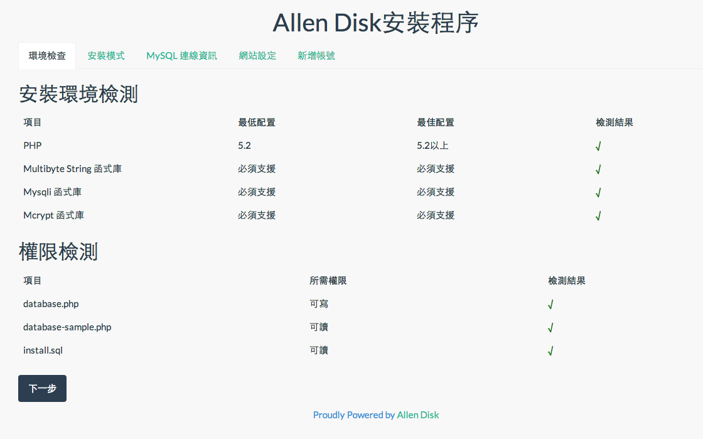4. 選擇安裝模式
安裝模式分為：全新安裝、舊版升級，舊版升級請直接以 Allen Disk 1.3 版檔案覆蓋 1.2 版檔案（database.php 和 /file 除外，絕對不要覆蓋到這兩個檔案），然後進行升級程序，請注意舊版必須為 1.2 版，若為 1.2 以下之版本，請備份所有檔案後全新安裝，完成後重新上傳檔案。
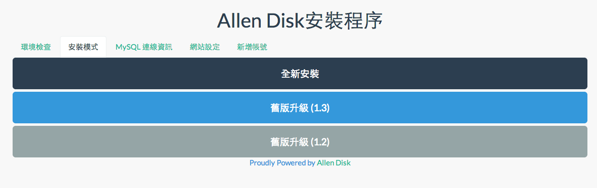5. 填入 MySQL 資訊
若為舊版升級，則安裝程序到此結束，全新安裝請繼續往下看
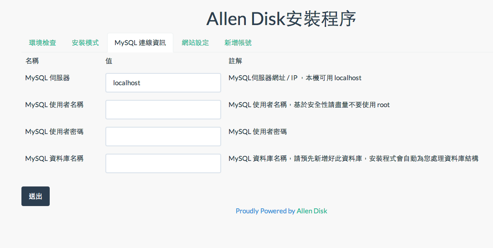6. 填入網站資訊
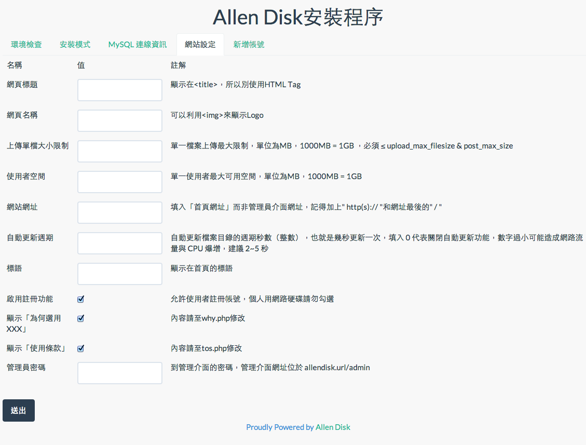7. 新增一個帳號
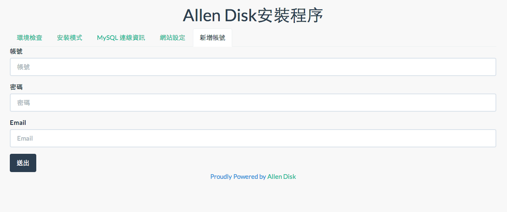手動安裝教學
若無法透過安裝程序進行安裝，請使用手動安裝，以下為步驟
1. 打開 /database.php 並依照註解填入資料
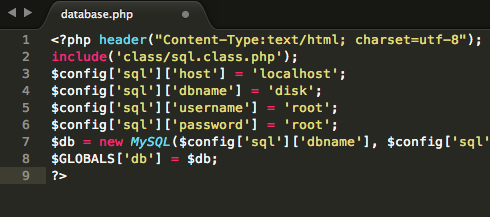2. 將 /install/install.sql 匯入 MySQL
3. 到安裝網址 /admin 填入網站資訊並新增帳號
管理後台預設密碼為 1234
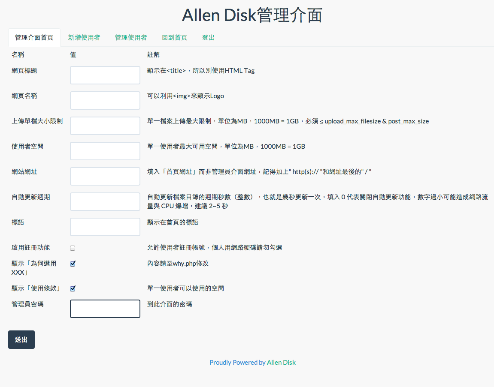疑難排解
檔案無法上傳
- 請先看看檔案上傳錯誤時是否有通知
- 嘗試看看傳統上傳功能，可能您的瀏覽器無法支援 AJAX 上傳
- 是否有奇怪的 PHP 執行錯誤或是 MySQL 無法正常執行
- 請檢查 php.ini 中的 file_uploads, upload_max_filesize, memory_limit, post_max_size，必須比管理員介面內的設定值還要大， memory_limit, post_max_size 要略大於 file_uploads, upload_max_filesize ， 且 max_input_time, max_execution_time 不要太小
無法安裝
請確定 MySQL 資訊正確且可以寫入讀取，必要檔案可以讀寫，需求模組齊全，以上內容會在安裝前作確認，如果一切符合但仍然無法安裝，請嘗試手動安裝或是通知 Allen
我發現Bug或是漏洞，怎麼辦
請將漏洞或 Bug 的內容寄送到 s3131212@gmail.com 並詳細說明漏洞內容、重現方法等等，我們會由衷的感謝您的！
我想要把Allen Disk用於商業用途
我們完全歡迎Allen Disk用於商業用途，但是請務必留下網頁底部的版權宣告
Copyright © 2014 Allen Chou